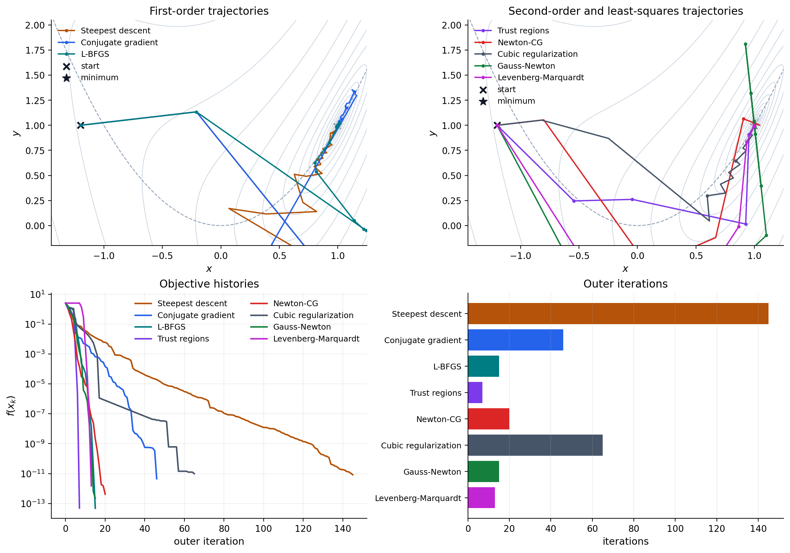

Comparing solvers in a curved valley#
No optimizer is uniformly best. First-order methods trade cheap iterations for slower local convergence, Hessian methods spend more work on each step, and least-squares methods exploit residual structure that a generic scalar objective hides. This tutorial places those choices on the same two-dimensional problem so that both the iterates and convergence histories are visible.
Consider the residual
with objective
Its unique zero is \((1,1)\). The first residual bends low objective values along the parabola \(y=x^2\), producing a mild curved valley without making this small experiment unnecessarily stiff.
import time
import jax
jax.config.update("jax_enable_x64", True)
import jax.numpy as jnp
import matplotlib.pyplot as plt
import numpy as np
from geojax.geometry import Euclidean
from geojax.optimization import (
AdaptiveRegularizationCubics,
ConjugateGradient,
GaussNewton,
LBFGS,
LeastSquares,
LevenbergMarquardt,
Minimize,
NewtonCG,
SteepestDescent,
TrustRegions,
)
plt.rcParams.update({
"figure.dpi": 200,
"savefig.dpi": 240,
"font.size": 11,
"axes.titlesize": 12,
"axes.labelsize": 11,
"xtick.labelsize": 10,
"ytick.labelsize": 10,
"legend.fontsize": 9,
"axes.spines.top": False,
"axes.spines.right": False,
})
M = Euclidean(size=2)
x0 = jnp.array([-1.2, 1.0])
def residual(x):
return jnp.array([x[1] - x[0] ** 2, 1.0 - x[0]])
def cost(x):
value = residual(x)
return 0.5 * jnp.dot(value, value)
def record_point(problem, x, entry):
del problem, entry
return {"point": np.asarray(x).copy()}
One objective, three information levels#
All methods below see the same geometry and starting point. The first three use
gradients, the next three use Hessian-vector products, and the last two receive
the residual map through LeastSquares. Cubic regularization uses its Cauchy
subproblem step here, keeping the comparison compact and deterministic.
common = dict(tolgradnorm=2e-6, verbosity=0, statsfun=record_point)
solvers = [
("Steepest descent", SteepestDescent(maxiter=300, **common), "first"),
("Conjugate gradient", ConjugateGradient(maxiter=200, **common), "first"),
("L-BFGS", LBFGS(maxiter=100, **common), "first"),
("Trust regions", TrustRegions(maxiter=100, **common), "second"),
("Newton-CG", NewtonCG(maxiter=100, **common), "second"),
(
"Cubic regularization",
AdaptiveRegularizationCubics(
maxiter=100,
subproblem_iterations=0,
**common,
),
"second",
),
("Gauss-Newton", GaussNewton(maxiter=100, **common), "least-squares"),
(
"Levenberg-Marquardt",
LevenbergMarquardt(maxiter=100, **common),
"least-squares",
),
]
results = []
for name, solver, family in solvers:
if family == "least-squares":
problem = LeastSquares(M=M, residual=residual, x0=x0, solver=solver)
else:
problem = Minimize(M=M, cost=cost, x0=x0, solver=solver)
started = time.perf_counter()
solution, final_cost, history = problem.solve()
jax.block_until_ready(solution)
elapsed = time.perf_counter() - started
path = np.stack([row.extra["point"] for row in history])
results.append({
"name": name,
"family": family,
"solution": np.asarray(solution),
"cost": final_cost,
"history": history,
"path": path,
"elapsed": elapsed,
})
print(f"{'solver':<24} {'iter':>5} {'final cost':>13} {'grad norm':>13}")
print("-" * 59)
for result in results:
final = result["history"][-1]
print(
f"{result['name']:<24} {final.iter:>5d} "
f"{result['cost']:>13.3e} {final.gradnorm:>13.3e}"
)
solver iter final cost grad norm
-----------------------------------------------------------
Steepest descent 145 8.292e-12 1.878e-06
Conjugate gradient 46 4.494e-12 1.311e-06
L-BFGS 15 4.805e-14 6.750e-07
Trust regions 7 4.921e-14 3.034e-07
Newton-CG 20 4.145e-13 1.188e-06
Cubic regularization 65 9.771e-12 1.849e-06
Gauss-Newton 15 2.242e-13 1.540e-06
Levenberg-Marquardt 13 1.492e-12 7.193e-07
Iteration counts compare outer steps, not equal computational work. A trust-region iteration may use several Hessian-vector products, while one steepest-descent iteration needs only a gradient and line search. Timings are also sensitive to JAX’s first-use compilation and should be benchmarked after warmup for performance claims.
Visual report#
The upper panels show the paths taken by gradient-based and structured second-order methods. The lower panels compare objective histories and outer iteration counts. Every trajectory reaches the same minimizer, but it responds differently to the valley’s changing orientation.
x_grid = np.linspace(-1.45, 1.25, 320)
y_grid = np.linspace(-0.20, 2.05, 320)
xx, yy = np.meshgrid(x_grid, y_grid)
landscape = 0.5 * ((yy - xx**2) ** 2 + (1.0 - xx) ** 2)
levels = np.geomspace(1e-4, 5.0, 18)
colors = {
"Steepest descent": "#B45309",
"Conjugate gradient": "#2563EB",
"L-BFGS": "#007C83",
"Trust regions": "#7C3AED",
"Newton-CG": "#DC2626",
"Cubic regularization": "#475569",
"Gauss-Newton": "#15803D",
"Levenberg-Marquardt": "#C026D3",
}
fig, axes = plt.subplots(2, 2, figsize=(12.2, 8.5), constrained_layout=True)
def trajectory_panel(ax, families, title):
ax.contour(xx, yy, landscape, levels=levels, colors="#CBD5E1", linewidths=0.75)
ax.plot(x_grid, x_grid**2, color="#94A3B8", linestyle="--", linewidth=1.0)
for result in results:
if result["family"] not in families:
continue
path = result["path"]
ax.plot(
path[:, 0],
path[:, 1],
marker="o",
markevery=max(1, len(path) // 10),
markersize=2.8,
linewidth=1.5,
color=colors[result["name"]],
label=result["name"],
)
ax.scatter(*x0, color="#111827", marker="x", s=50, linewidths=2, label="start")
ax.scatter(1.0, 1.0, color="#111827", marker="*", s=85, label="minimum")
ax.set(xlim=(x_grid[0], x_grid[-1]), ylim=(y_grid[0], y_grid[-1]))
ax.set(title=title, xlabel="$x$", ylabel="$y$")
ax.legend(frameon=False, fontsize=9, loc="upper left")
trajectory_panel(axes[0, 0], {"first"}, "First-order trajectories")
trajectory_panel(
axes[0, 1],
{"second", "least-squares"},
"Second-order and least-squares trajectories",
)
for result in results:
values = np.maximum([row.cost for row in result["history"]], 1e-16)
axes[1, 0].semilogy(
np.arange(len(values)),
values,
linewidth=1.7,
color=colors[result["name"]],
label=result["name"],
)
axes[1, 0].set(title="Objective histories", xlabel="outer iteration", ylabel="$f(x_k)$")
axes[1, 0].grid(alpha=0.2)
axes[1, 0].legend(frameon=False, fontsize=9, ncol=2)
names = [result["name"] for result in results]
iterations = [result["history"][-1].iter for result in results]
axes[1, 1].barh(
np.arange(len(names)),
iterations,
color=[colors[name] for name in names],
)
axes[1, 1].set_yticks(np.arange(len(names)), labels=names, fontsize=9)
axes[1, 1].invert_yaxis()
axes[1, 1].set(title="Outer iterations", xlabel="iterations")
axes[1, 1].grid(axis="x", alpha=0.2)
plt.show()

The comparison suggests a practical progression. Start with conjugate gradient
or L-BFGS for a generic smooth model. Move to Newton-CG, trust regions, or cubic
regularization when accurate Hessian products justify their cost. When the
model is genuinely a sum of squared residuals, preserve that structure with
LeastSquares; Gauss–Newton and Levenberg–Marquardt can then operate on
\(J_x^*J_x\) without forming either the Jacobian or the full Hessian.